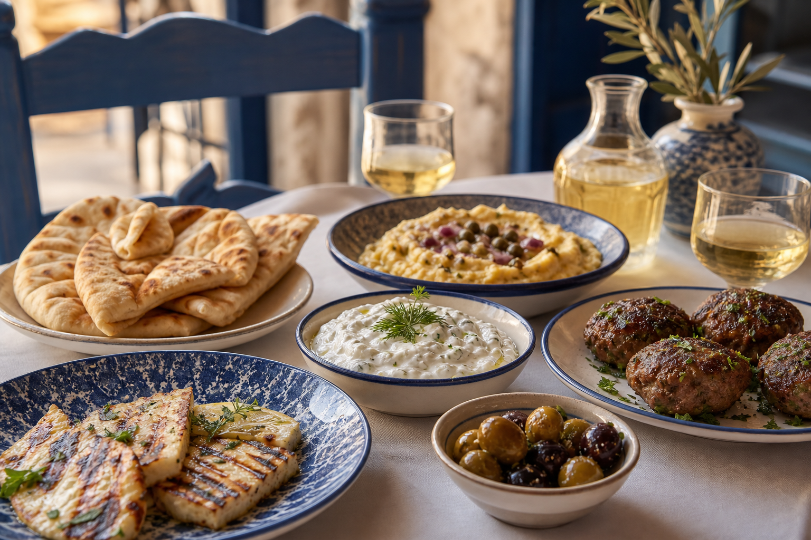

The Acropolis appears
The Parthenon sits above the tiled roofs of Plaka, visible before anyone has opened a guidebook.
Find the view →
Day 01 Saturday, 10 October 2026 · Athens
Three arrivals, one apartment and a first evening in the historic centre.
The difficult part is getting three cousins into the same city at roughly the same time.
Regroup in the historic centre as the flights land. “Roughly the same time” is sufficiently precise for three separate journeys.
Choose a central two-bedroom base in Plaka, Monastiraki or Koukaki, ideally with self-check-in and room to gather.
Enter the archaeological heart of the old city, where broad paths, olive trees and layers of civic life sit beneath the Acropolis.
Pause at one of Greece’s best-preserved ancient temples, glowing honey-gold above the Agora.
Climb as the heat fades. From the ridge, the Parthenon catches the last amber light and Athens stretches toward the sea.
Take the first long table of the trip: shared plates, local wine and no reason to rush the evening.
The Parthenon sits above the tiled roofs of Plaka, visible before anyone has opened a guidebook.
Find the view →Philopappos gives the group room to pause while the Parthenon turns amber.
Open location →A courtyard table, local wine and enough small plates to remove all meaning from the word “small.”
Explore the quarter →
Start with warm pita, tzatziki and grilled halloumi, then add keftedes, fava and whatever the waiter recommends. One bottle of local white should cover the first toast; the cousins can conduct further research if required.
Keep the first afternoon loose because flight and airport timings may differ.
Remain within walking distance of Plaka, the Agora and Monastiraki.
Wear reliable shoes for ancient paving and the Philopappos climb.
Start near Monastiraki, cross the Ancient Agora, continue to Philopappos Hill and finish in Psirri. The apartment remains close enough for a jacket change before dinner.
Open full route in Maps →